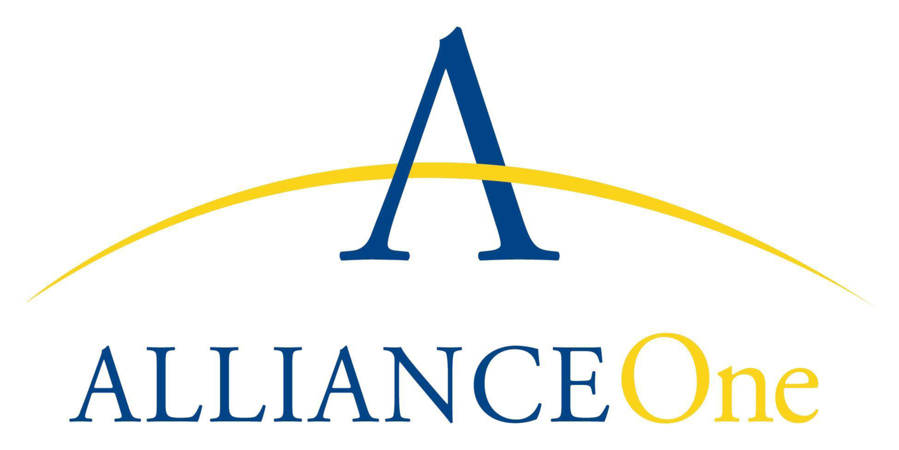
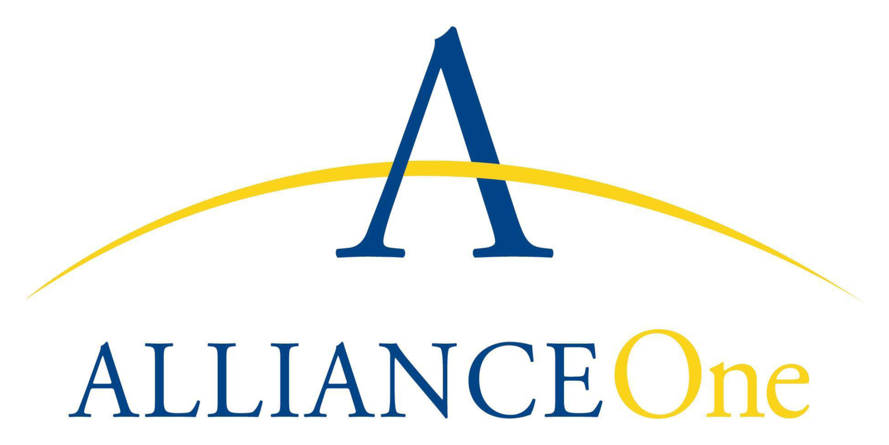

There is no employment or recruitment of child labor.
The minimum age for admission to work is not less than
the age for the completion of compulsory schooling and,
in any case, is not less than 15 years or the minimum
age provided by the country’s laws, whichever affords
greater protection.
No person below 18 is involved in any type of hazardous
work.
In the case of family farms, a child may only help on his
or her family’s farm provided that the work is light work
and the child is between 13 and 15 years or above the
minimum age for light work as defined by the country’s
laws, whichever affords greater protection.
There is no physical abuse, threat of physical abuse, or
physical contact with the intent to injure or intimidate.
There is no sexual abuse or harassment.
There is no verbal abuse or harassment.
There is no discrimination on the basis of race, color,
caste, gender, religion, political affiliation, union
membership, status as a worker representative, ethnicity,
pregnancy, social origin, disability, sexual orientation,
citizenship, or nationality.
Workers have access to a fair, transparent and anonymous
grievance mechanism.
Wages of all workers (including for temporary, piece rate,
seasonal, and migrant workers) meet, at a minimum,
national legal standards or agricultural benchmark
standards
Wages of all workers are paid regularly, at a minimum, in
accordance with the country’s laws.
Work hours are in compliance with the country’s laws.
Excluding overtime, work hours do not exceed, on a
regular basis, 48 hours per week
Overtime work hours are voluntary.
Overtime wages are paid at a premium as required by the
country’s laws or by any applicable collective agreement.
All workers are provided with the benefits, holidays, and
leave to which they are entitled by the country’s laws.
 
